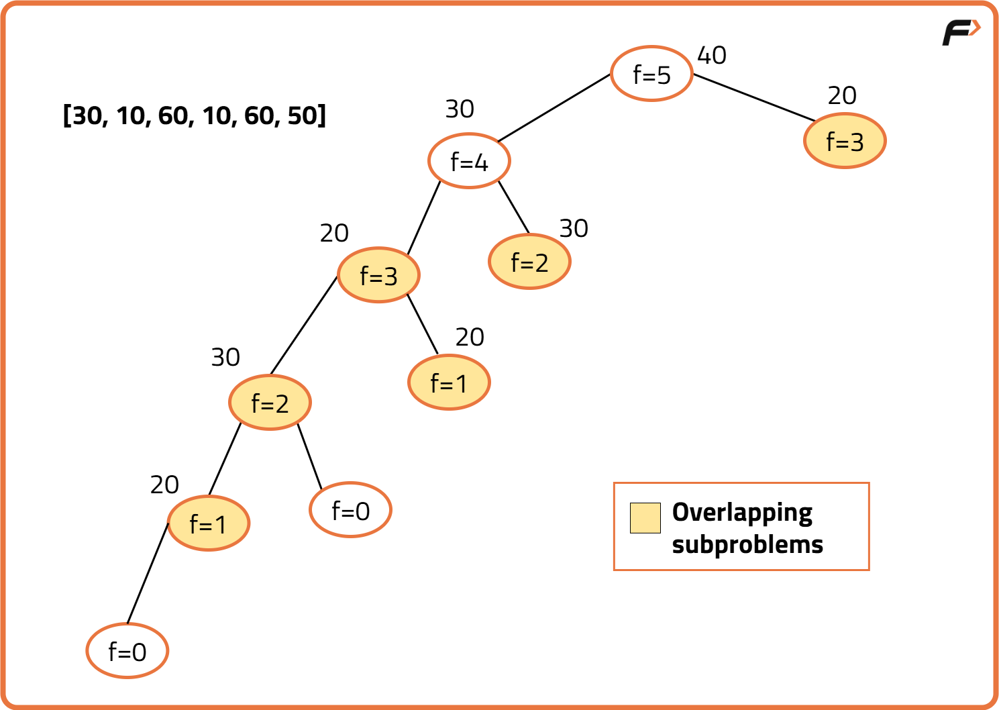

Dynamic Programming : Frog Jump (DP 3)
Problem Statement: Given a number of stairs and a frog, the frog wants to climb from the 0th stair to the (N-1)th stair. At a time the frog can climb either one or two steps. A height[N] array is also given. Whenever the frog jumps from a stair i to stair j, the energy consumed in the jump is abs(height[i]- height[j]), where abs() means the absolute difference. We need to return the minimum energy that can be used by the frog to jump from stair 0 to stair N-1..
Examples
Example 1:
Input: heights = [2, 1, 3, 5, 4]
Output: 2
Explanation: One possible route can be,
0th step -> 2nd Step = abs(2 - 3) = 1
2nd step -> 4th step = abs(3 - 4) = 1
Total = 1 + 1 = 2.
Example 2:
Input: heights = [7, 5, 1, 2, 6]
Output: 9
Explanation: One possible route can be,
0th step -> 1st Step = abs(7 - 5) = 2
1st step -> 3rd step = abs(5 - 2) = 3
3rd step -> 4th step = abs(2 - 6) = 4
Total = 2 + 3 + 4 = 9.
Disclaimer: Here is the practice link to help you assess your knowledge better. It's highly recommend trying to solve it before looking at the solution.
Memoization Approach
Algorithm
A frog is trying to reach the last stone. From any stone i, it can jump either
to stone i-1 or i-2, and the cost of a jump is the absolute
difference between the heights of the stones. To minimize the total cost, we recursively
compute the minimum cost to reach each stone, reusing already computed results through
memoization.
Approach:
- Define a recursive function
solve(ind)that returns the minimum cost to reach indexind. - Base case:
solve(0) = 0, since starting at the first stone has no cost. - For each index, calculate:
- Jump One: Cost from
ind-1toind. - Jump Two: Cost from
ind-2toind(only ifind > 1).
- Jump One: Cost from
- Take the minimum of both jumps and store it in the DP array for reuse.
- Finally, return
solve(n-1)as the answer.

Code
#include <bits/stdc++.h>
using namespace std;
class Solution {
public:
// Solve function using recursion with memoization
// ind -> current index the frog needs to reach
// height -> vector of heights
// dp -> memo table where dp[i] stores min cost to reach i
int solve(int ind, const vector<int>& height, vector<int>& dp) {
// If at the first stone, cost is 0
if (ind == 0) return 0;
// Return memoized result if already computed
if (dp[ind] != -1) return dp[ind];
// Initialize jumpTwo with a large value
int jumpTwo = INT_MAX;
// Compute cost when jumping from previous stone (ind - 1)
int jumpOne = solve(ind - 1, height, dp) + abs(height[ind] - height[ind - 1]);
// Compute cost when jumping from two stones back (ind - 2) if possible
if (ind > 1) {
jumpTwo = solve(ind - 2, height, dp) + abs(height[ind] - height[ind - 2]);
}
// Memoize and return the minimum of the two choices
return dp[ind] = min(jumpOne, jumpTwo);
}
// Helper to handle edge cases and start recursion
int frogJump(const vector<int>& height) {
// Handle empty input
if (height.empty()) return 0;
// Prepare dp with -1 indicating uncomputed states
int n = (int)height.size();
vector<int> dp(n, -1);
// Start from the last index
return solve(n - 1, height, dp);
}
};
int main() {
// Define the heights array
vector<int> height{30, 10, 60, 10, 60, 50};
// Create Solution instance
Solution sol;
// Compute and print the minimum energy
cout << sol.frogJump(height) << endl; // Expected: 40
return 0;
}
Complexity Analysis
Time Complexity: O(n), since each state (index) is computed once and stored in the DP array.
Space Complexity: O(n) for the DP array + O(n) recursion stack, leading to O(n) overall.
Tabulation Approach
Algorithm
Instead of solving the problem recursively, we can build the solution iteratively. Each stone's minimum cost depends only on the previous one or two stones. By filling a DP array step by step, we avoid recursion overhead and directly compute the answer.
Approach:
- Initialize a DP array of size
n, wheredp[i]represents the minimum cost to reach stonei. - Set
dp[0] = 0(no cost to start). - Iterate from
1ton-1:- Jump One: From
i-1toi. - Jump Two: From
i-2toi(only ifi > 1).
- Jump One: From
- At each step, store the minimum of the two jumps in
dp[i]. - The final answer is
dp[n-1], the minimum cost to reach the last stone.
Code
#include <bits/stdc++.h>
using namespace std;
class Solution {
public:
// Computes minimum energy to reach last index using bottom-up DP
int frogJump(const vector<int>& height) {
// Handle empty input
if (height.empty()) return 0;
// Fetch size of the input
int n = (int)height.size();
// Create dp array where dp[i] = min energy to reach i
vector<int> dp(n, INT_MAX);
// Base case: cost to stand on first stone is zero
dp[0] = 0;
// Iterate over stones from index 1 to n-1
for (int ind = 1; ind < n; ind++) {
// Compute cost for a jump from ind-1
int jumpOne = dp[ind - 1] + abs(height[ind] - height[ind - 1]);
// Initialize jumpTwo with large value
int jumpTwo = INT_MAX;
// If possible, compute cost for a jump from ind-2
if (ind > 1) {
jumpTwo = dp[ind - 2] + abs(height[ind] - height[ind - 2]);
}
// Take the minimum of the two options
dp[ind] = min(jumpOne, jumpTwo);
}
// Return min energy to reach last stone
return dp[n - 1];
}
};
int main() {
// Define the heights array
vector<int> height{30, 10, 60, 10, 60, 50};
// Create Solution instance
Solution sol;
// Compute and print the minimum energy
cout << sol.frogJump(height) << endl; // Expected: 40
return 0;
}
Complexity Analysis
Time Complexity: O(n), since we fill the DP array once with at most two computations per index.
Space Complexity: O(n) for the DP array.
Space Optimization Approach
Algorithm
We observed in the tabulation approach that to compute dp[i], we only need the
last two values: dp[i-1] and dp[i-2].
Hence, instead of storing the entire DP array, we can optimize the space by keeping just two
variables to track these states.
Approach:
- Initialize two variables:
prev→ representsdp[i-1].prev2→ representsdp[i-2].
- Iterate from
i = 1ton-1:- Compute the cost of Jump One:
prev + abs(height[i] - height[i-1]). - If
i > 1, compute Jump Two:prev2 + abs(height[i] - height[i-2]). - Take the minimum of the two.
- Compute the cost of Jump One:
- Update
prev2andprevaccordingly after each iteration. - At the end,
prevholds the minimum cost to reach the last stone.
Code
#include <bits/stdc++.h>
using namespace std;
class Solution {
public:
// Computes minimum energy to reach the last stone using O(1) space
int frogJump(const vector<int>& height) {
// Handle empty input
if (height.empty()) return 0;
// Fetch number of stones
int n = (int)height.size();
// Handle single stone case
if (n == 1) return 0;
// Initialize the cost to reach i-1 (prev) and i-2 (prev2)
int prev = 0;
int prev2 = 0;
// Iterate through stones from index 1 to n-1
for (int i = 1; i < n; i++) {
// Initialize jumpTwo with large value
int jumpTwo = INT_MAX;
// Compute cost for jumping from i-1
int jumpOne = prev + abs(height[i] - height[i - 1]);
// If possible, compute cost for jumping from i-2
if (i > 1) {
jumpTwo = prev2 + abs(height[i] - height[i - 2]);
}
// Determine minimal cost to reach current stone
int cur_i = min(jumpOne, jumpTwo);
// Shift window: update prev2 and prev
prev2 = prev;
prev = cur_i;
}
// Return minimal cost to reach last stone
return prev;
}
};
int main() {
// Define the heights array
vector<int> height{30, 10, 60, 10, 60, 50};
// Create Solution instance
Solution sol;
// Compute and print the minimum energy
cout << sol.frogJump(height) << endl; // Expected: 40
return 0;
}
Complexity Analysis
Time Complexity: O(n), since we iterate through the stones once.
Space Complexity: O(1), because we only store two variables instead of an entire DP array.